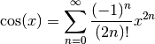
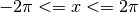

Approximating Sine and Cosine functions using Taylor Series¶
In this example, we calculate an approximation of the cosine functions using the Taylor series:

The following example uses the Taylor Series approximation to generate the Sine
and Cosine functions. Successive terms of the taylor series are calculated
until successive approximations agree to within a small degree. A Sine
function is also synthesised using the identity 
/* taylor.c */
/* Jonathan P Dawson */
/* 2013-12-23 */
/* globals */
float pi=3.14159265359;
/* approximate the cosine function using Taylor series */
float taylor(float angle){
float old, approximation, sign, power, fact;
unsigned count, i;
approximation = 1.0;
old = 0.0;
sign = -1.0;
count = 1;
power = 1.0;
fact = 1.0;
for(i=2; approximation!=old; i+=2){
old = approximation;
while(count<=i){
power*=angle;
fact*=count;
count++;
}
approximation += sign*(power/fact);
sign = -sign;
}
return approximation;
}
/* return the cosine of angle in radians */
float cos(float angle){
return taylor(angle);
}
/* return the sine of angle in radians */
float sin(float angle){
return cos(angle-(pi/2));
}
/* test routine */
void main(){
float x;
float step=pi/25;
for(x=-2*pi; x <= 2*pi; x += step){
file_write(x, "x");
file_write(cos(x), "cos_x");
file_write(sin(x), "sin_x");
}
}
A simple test calculates Sine and Cosine for the range .